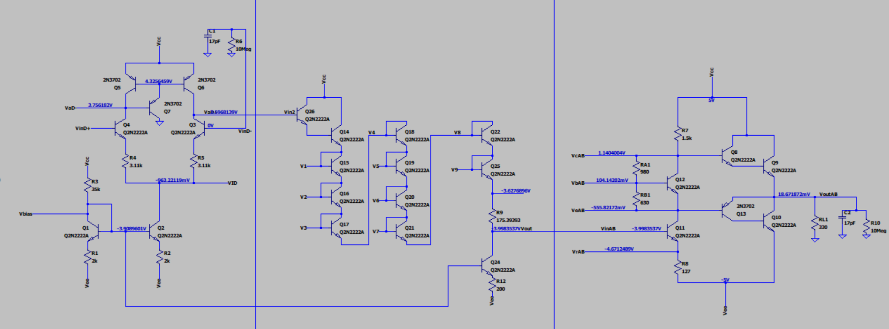
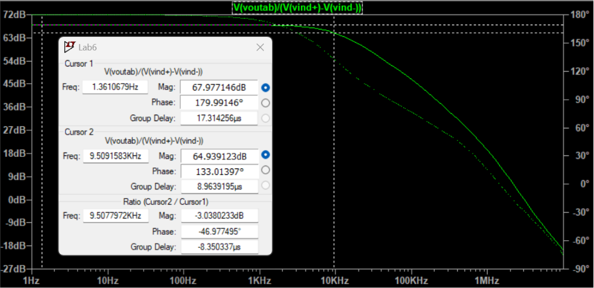
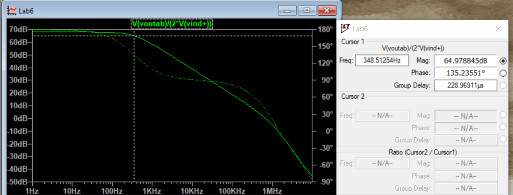
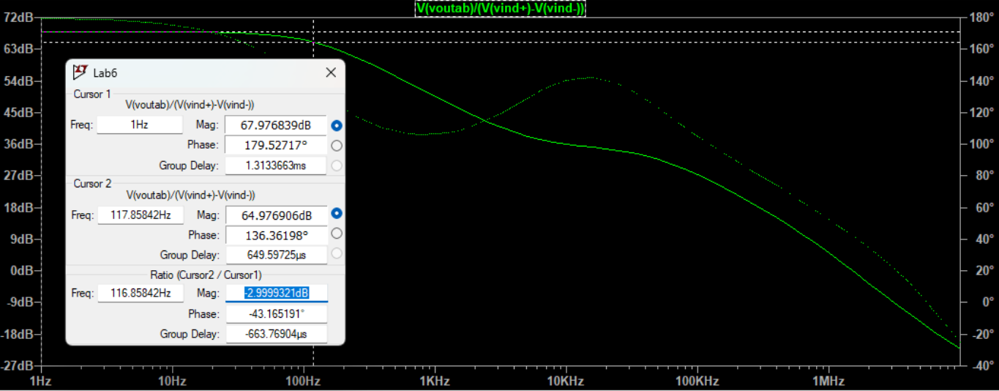

PROJECT OVERVIEW
Building an operational amplifier from discrete transistors
This project involved designing, simulating, and validating a general-purpose operational amplifier constructed from commercially available bipolar junction transistors (BJTs). The design integrates a differential gain stage, a buffer stage, and a Class AB output stage.
LTspice was used to evaluate voltage gain, input resistance, frequency response, voltage-transfer characteristics, and operating range. A key challenge was improving the stability of the combined amplifier through frequency compensation.

AMPLIFIER ARCHITECTURE
Three stages with distinct functions
The amplifier combines three circuit blocks into one signal chain. Each stage contributes to the overall gain, inter-stage operation, or output-driving capability.
01 — Differential amplifier
The input stage amplifies the difference between its input signals and uses an active load as part of the voltage-gain architecture.
02 — Buffer stage
The intermediate stage incorporates diode-connected transistors and a common-emitter amplifier, linking the differential input stage to the output stage.
03 — Class AB output stage
The output stage provides the final output drive. The complete amplifier was evaluated with a 330 Ω resistive load.


LTSPICE ANALYSIS
Initial performance before compensation
The integrated amplifier was first simulated without frequency compensation. Although the circuit achieved high voltage gain, the negative phase margin indicated that the stability requirement was not met.
VOLTAGE GAIN
−2505.29 V/V
Simulated gain of the uncompensated amplifier.
INPUT RESISTANCE
886.4 kΩ
Input resistance reported by the initial analysis.
CUTOFF FREQUENCY
9.5 kHz
Initial cutoff frequency before compensation.
PHASE MARGIN
−28.73°
Negative phase margin motivated the addition of frequency compensation.

Voltage-transfer behaviour
In the reported simulation, the output remained close to 0 V across an input range of approximately −3.4 V to +3.8 V. The initial analysis recorded a maximum output swing of 6.07 V for a maximum input swing of 2.28 mV.
FREQUENCY COMPENSATION
Trading bandwidth for stability
The uncompensated phase margin was below the project's minimum target of 25°. Two capacitor configurations were evaluated in LTspice to improve phase margin. Both improved the simulated stability, with different effects on cutoff frequency.
Option A — 100 nF
A 100 nF capacitor connected between the amplifier input and output.
Phase margin: 42.23°
Cutoff frequency: 117.86 Hz
Option B — 500 pF
A 500 pF capacitor connected between the buffer-stage input node and ground.
Phase margin: 38.34°
Cutoff frequency: 348.51 Hz
100 nF compensation
500 pF compensation

Design decision
Both configurations exceeded the 25° phase-margin target. The 100 nF option was selected because it provided a higher phase margin and was considered simpler to implement with a single capacitor. The 500 pF option retained a higher cutoff frequency, illustrating the trade-off between stability and bandwidth.
LOADED PERFORMANCE
Evaluating the amplifier with a 330 Ω load
The compensated amplifier was evaluated with a 330 Ω output load to assess the effect of loading on its simulated performance.
VOLTAGE GAIN
≈ −2505 V/V
Reported gain remained approximately unchanged.
CUTOFF FREQUENCY
116.85 Hz
Reported cutoff frequency under load.
PHASE MARGIN
42.23°
Reported phase margin under load.
MAXIMUM OUTPUT SWING
6.5 V
Corresponding reported maximum input swing: 2.16 mV.

The report also indicated that the output transfer characteristic remained close to the initial result, with the output bias near 0 V across the reported input range of −3.4 V to +3.8 V.
These results show how the selected compensation approach met the target phase margin in simulation while preserving the reported gain with the specified resistive load.
PROTOTYPING & VALIDATION
From simulation to a discrete prototype
The project involved a discrete prototype built using commercially available BJT transistors. The work combined circuit design, simulation, and prototype evaluation to investigate the behaviour of a general-purpose operational amplifier.
The numerical performance results presented here are taken from the LTspice analysis and should not be interpreted as measured hardware results.
FUTURE IMPROVEMENTS
Potential next steps
- Compare measured prototype gain, bandwidth, and stability against the LTspice simulations.
- Investigate compensation values to balance phase margin and usable bandwidth.
- Evaluate how transistor variations and parasitic capacitances affect circuit stability.
- Characterize distortion and output behaviour across a wider range of load conditions.
KEY TECHNOLOGIES